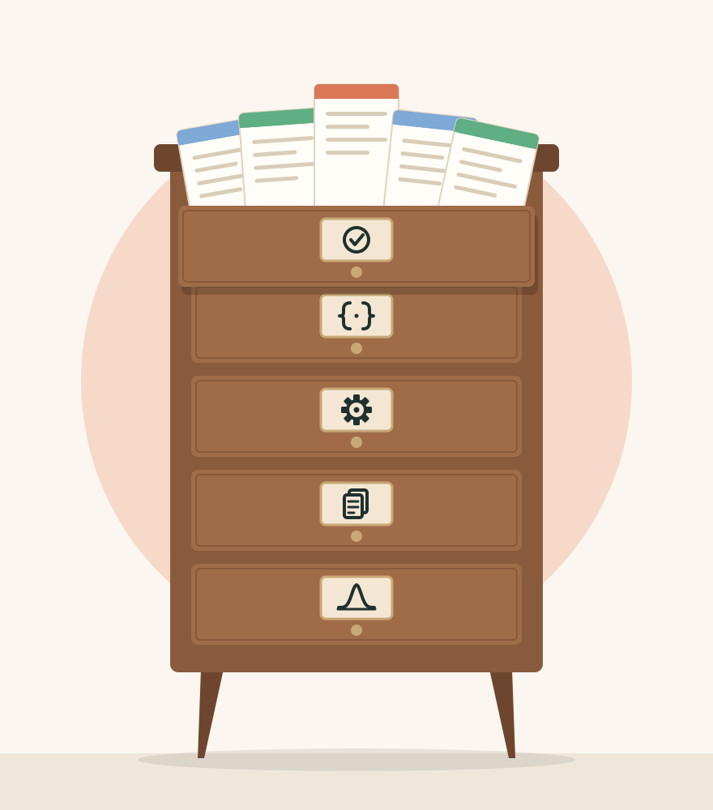

How I use AI to scale and accelerate research at a 13,000-person enterprise technology company
World Wide Technology has three full-time user researchers. I built an AI-enabled User Research Hub so designers, PMs, and creative directors can apply our team's guidance through Claude on projects we can't staff directly.

Teams were running research with Claude without the expertise to judge its output
People across WWT run their own studies, pre-sales engagements, and stakeholder and client workshops, work a research team would normally guide or perform. Many of them handed the research to Claude, pasting in transcripts and asking it to write the report.
Claude filled the gaps with general training data. The output looked finished and fell apart under scrutiny: generic text, empty statements, inaccuracies, and findings that skipped cause and effect. Teams often spent more time editing it than the work would have taken by hand.
Some of it reached clients, who recognized it as AI-generated and asked what they were paying WWT for.
Teams call our research guides and tools directly from Claude
To understand how LLMs and AI tools work, I first completed a week-long AI-native engineering bootcamp with honors and Anthropic's AI Fluency course. I then built a hub that turns our team's expertise into guides, skills, and calculators anyone at WWT can use. It draws on my professional experience, vetted academic literature, and established user experience standards.
- Report repository
- Best practice guides
- Claude skills
- Client engagement models
- Research calculators
- 55-item heuristic analyzer for products serving users with low digital literacy and low income


Claude connects to the hub in Notion through MCP, Claude skills link to the guides they rely on, and anyone can ask Claude to apply a specific guide while they work, such as reviewing a survey draft or proposing edits to a report.
"Evaluate my draft strictly against our Report Writing Guidelines in Notion. Identify where my insights lack empirical precision and rewrite them to match the guidelines."
Teams use it to tighten the legibility, causality, structure, and readability of their materials before sharing them with a colleague or a client.
Teams now run first-pass reviews of their research without a researcher
Used across roles
Creative directors, researchers, designers, and PMs use the hub.
Higher-quality work
A creative director credited the hub for the improvement she saw in work from our intern and a researcher.
First-pass reviews moved to the hub
Teams check their own drafts first, which frees a couple of hours of my week for deeper research work.
The executive creative director invited me to present the hub at an all-hands.
I designed the hub so people interpret the evidence and Claude checks the materials
User research produces the foundational findings that product strategy is built on, and each finding has to trace back to what participants said and did. Handing analysis to a generative model breaks that chain. The model returns plausible themes with no reliable record of the evidence behind them, and the person running the study never builds the understanding that comes from working through the data.
In the hub, people decide what to study, interpret what participants said, and choose what to act on. Claude checks their materials against the hub's guides, flags gaps, and sharpens precision and clarity. Every check draws on the same standards, so feedback stays consistent from one person to the next.